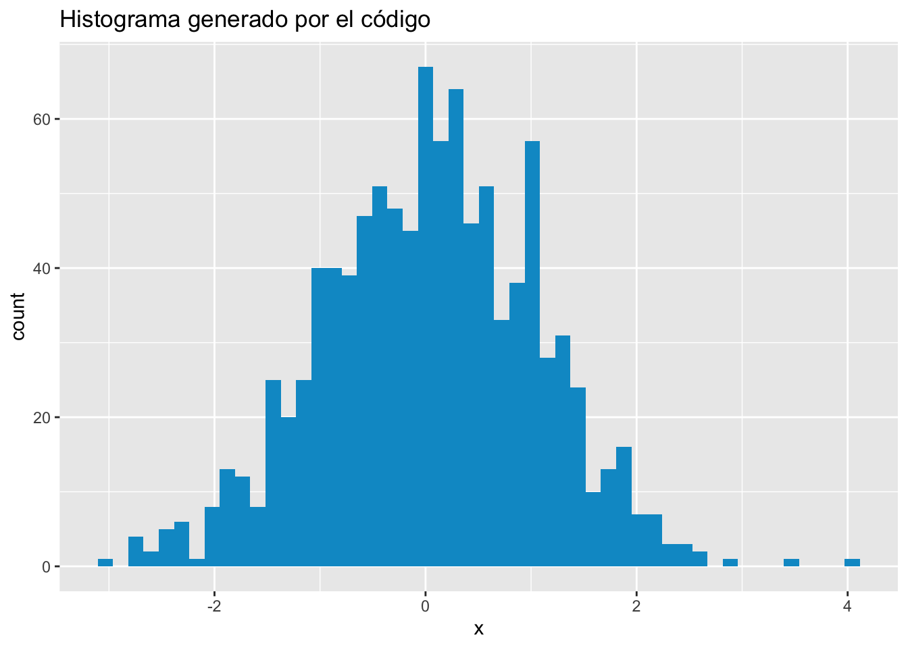

Capítulo 11 Instalación de paquetes
Un paquete de R es un conjunto de funciones adicionales elaboradas por los usuarios, las cuales permiten hacer cosas adicionales en R. Para instalarlos requieres de una conexión a Internet (o bien puedes instalarlos a partir de un archivo, por ejemplo, mediante una USB). El comando de instalación es install.packages seguido del nombre del paquete. Por ejemplo (y por ocio) descarguemos el paquete beepr para hacer reproducir sonidos en la computadora11. Para ello:
[...]
* DONE (beepr)
The downloaded source packages are in
‘/algun/lugar/downloaded_packages’Esto significa que el paquete ha sido instalado. Nos interesa usar la función beep que emite un sonido (??beep para ver la ayuda). Si la llamamos así tal cual, nos da error:
R es incapaz de hallar la función porque aún no le hemos dicho dónde se encuentra. Para ello podemos llamar al paquete mediante la función library y decirle a R que incluya las funciones que se encuentran dentro de beepr:
El comando library le dice a R ¡hey, voy a usar unas funciones que creó alguien más y que están dentro del paquete beepr! De esta manera, al correr beep(3), R ya sabe dónde hallar la función y por eso no arroja error.
11.0.1 Ejercicios
NIVEL 1
- Instala los paquetes
tidyverseenR. - De
tidyversehaz lo necesario para que el siguiente bloque de código te arroje una gráfica:
#Aquí tienes que hacer algo
#
# RELLENA AQUÍ
#
#Esto genera un histograma
set.seed(1364752)
mis.datos <- data.frame(x = rnorm(1000))
ggplot(mis.datos, aes(x = x)) +
geom_histogram(bins = 50, fill = "deepskyblue3") +
ggtitle("Histograma generado por el código")
NIVEL 3
- Instala el paquete
devtools(para hacerlo probablemente necesites instalar más cosas en tu computadora; averigua cuáles) - Usa
devtoolspara instalar el paqueteemoGGdesde Github. - Verifica que tu instalación fue correcta haciendo la siguiente gráfica:

En los siguientes capítulos descargaremos paquetes más interesantes; pero no desprecies la utilidad de
beepryo lo he usado en múltiples ocasiones para que la computadora me avise que ya terminó de correr un código.↩︎